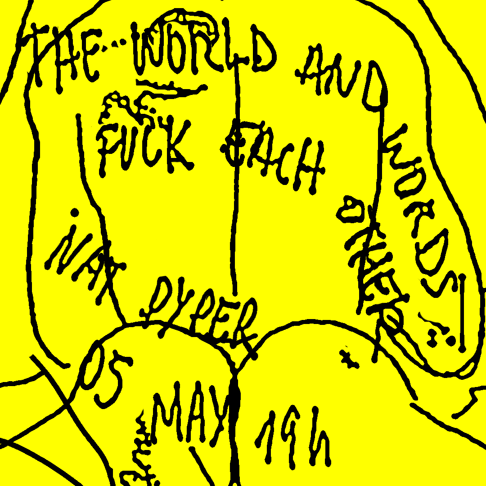
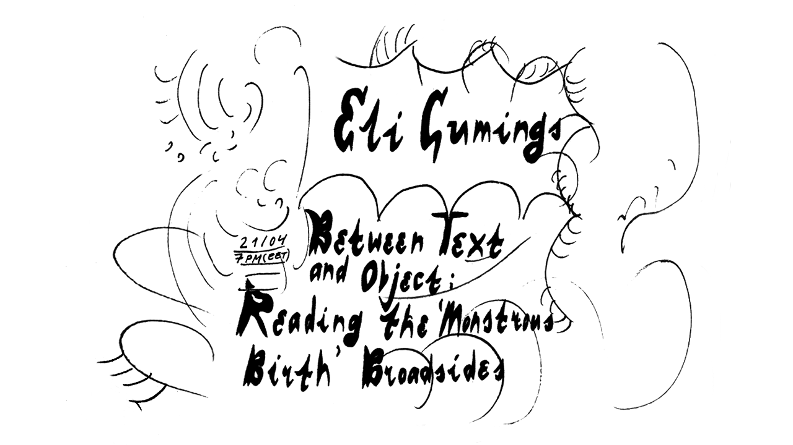
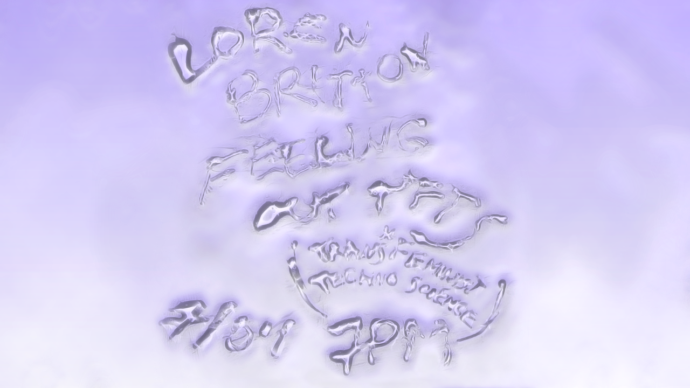
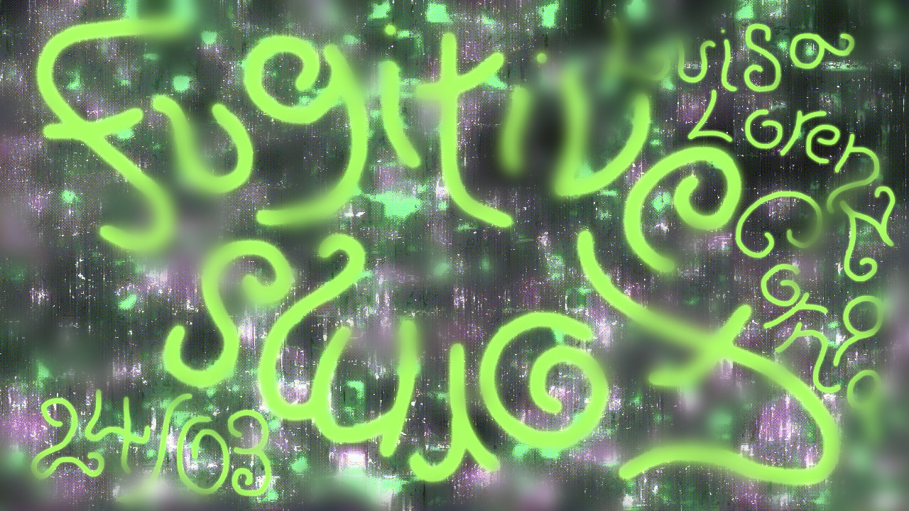
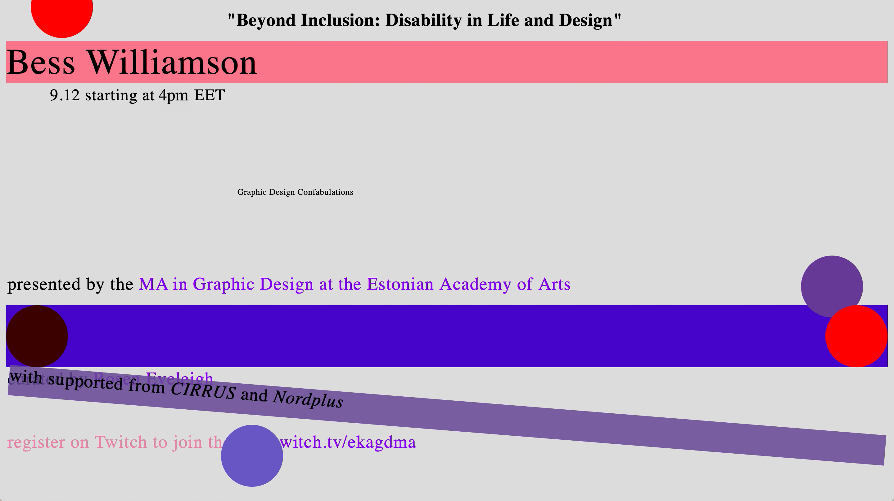
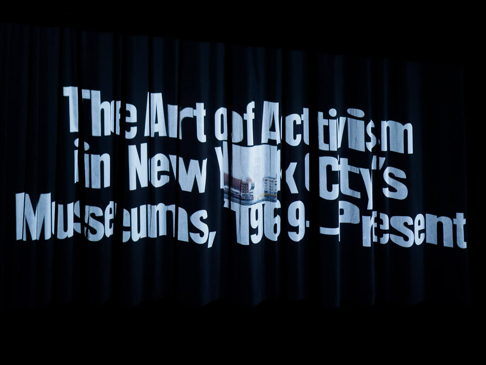
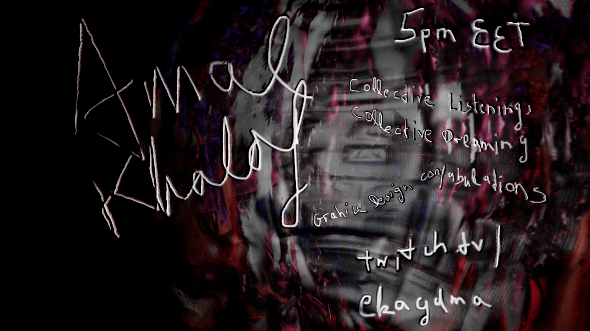
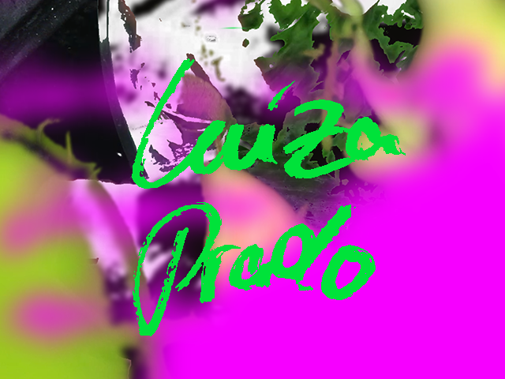
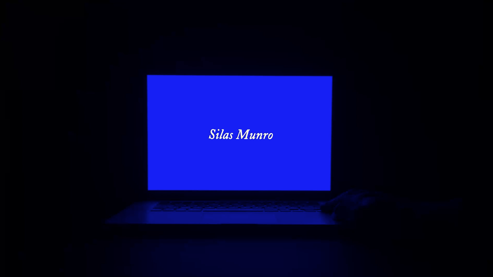
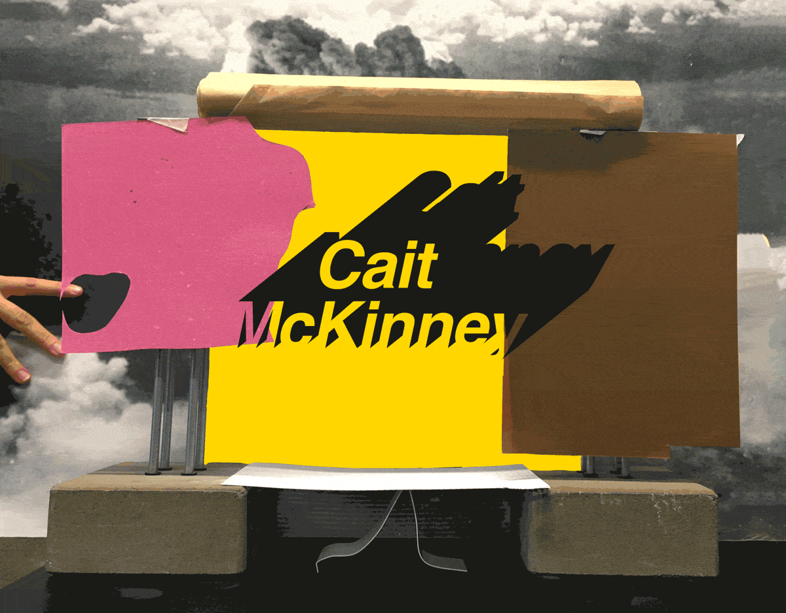

05 May 2021, 19h (EET)
“FAGGOTS GALORE. WHIRLING LESBIAN DERVISHES. OUT COME THE FREAKS.”
So begins Fuzz Box Vol. 2 No. 5, a zine edited by Nicolas Jenkins in Montreal at the height of the queer anarcho-punk scene of the late ’80s and early ’90s. In an era shaped by the AIDS epidemic and its ensuing culture wars, violences, and oppressions, zinesters waged queerness as a weapon against bigotry and boredom. Join Nat Pyper for an erotic close reading and page-turning performance of Fuzz Box, the At War issue: an intimate encounter between publishing and desire.
Bio:
Nat Pyper is an alphabet artist. In their work and writing, they use language as a sieve and they push the body through it. They make fonts, write sci-fi, design wearables for videos and performances, and research radical queer publishing histories. Their work has been shown at Chuquimarca Projects and Gene Siskel Film Center in Chicago, Printed Matter in New York City, and Vox Populi in Philadelphia. They received their MFA from the Yale School of Art. They are currently a 2021-22 HATCH Artist Resident at the Chicago Artists Coalition.

21 Apr 2021, 19h (EET)
In sixteenth-century Europe, interest in so-called ‘monstrous births’ was rife. Infants with congenital abnormalities were displayed at fairs, outside churches and in their homes. The causes of their physical deviance were considered in medical and ethnographical works, as well as sermons, autobiographies, and a host of other texts. The tradition of interpreting infants in this way was, of course, not new. But in the early modern period, the discourse entered print for the first time.
In this lecture I will reflect upon the consequences of this material fact, focussing my discussion on a small group of ‘broadsides’: cheap, mass-produced, single-sheet texts which were intended for a general readership. How did these texts articulate and transmit ideologies of bodily difference? What was the relationship between their form and content? How did they shape public notions of normalcy and deviance?
Bio:
Eli Cumings is a doctoral researcher at the University of Cambridge. Her work explores the representation of bodily difference in the textual culture of the Protestant Reformation, using the notion of ‘monstrosity’ as the point of departure. She is currently based in Berlin, where she will shortly begin a DAAD-funded research project.

07 Apr 2021, 19h (EET)
Walking along a the uneven accountabilities of trans* feminist technoscience and critical pedagogy: Feeling out T*FTS (Trans*FeministTechnoScience) will be a lecture based in a not emerged (non-linear and between) timeline. Based in queer theory, trans* studies, feminist technoscience and disability justice the lecture will be a remixing of different theoretical texts and artistic and design projects that have impacted me as an artist and researcher. Feelings will be prioritised and omissions are promised.
Bio:
Loren Britton is an interdisciplinary artist and researcher tuning with practices of Critical Pedagogy, Trans*FeministTechnoScience and Disability Justice. Playing with the queer potential of undoing norms they practice joyful accountability to matters of anti-racism, collaboration, Black Feminisms, instability and transformation. With Isabel Paehr as MELT, they queer knowledges from computation and chemistry to shift metaphors of melting in times of climate change. Britton is an Associate Lecturer in Queer Feminist Technoscience & Digital Design at i-DAT at the University of Plymouth, UK; and an artistic researcher on the interdisciplinary project ‘Re: Coding Algorithmic Culture’ within the Gender/Diversity in Informatics Systems Research Group at the University of Kassel, DE.

24 Mar 2021, 19h (EET)
Taking the lead from Fred Moten and Harney’s criticism of academia and call for dissident forms of knowledge production, this presentation will explore the lives and the work of a group of 20th century figures that enacted forms of fugitivity avant-la-lettre. We will adopt a notion of fugitivity intended both as a breaching of the institutional frame, as well as a desire to trespass the boundaries between theory and practice, different media, literary genres and ultimately art and politics. We will first examine how critic Carla Lonzi’s decision to leave the artworld and embrace separatist feminism, was paralleled by a transfiguration of her mode of writing, aimed at challenging the artifice of language. We will then move to the erratic literary production of 70s gay activist Mario Mieli, which we will examine in light of his political attempt to replace identity with a world of erotic abundance.
Bio:
Luisa Lorenza Corna is an art and design historian teaching at Middlesex University. Her main areas of research are art, Marxism and feminism. She has written for various art and design magazines, amongst which Texte Zur Kunst, Art Monthly, Flash Art and Domus. She is completing an anthology of writings of the feminist art historian Carla Lonzi for Seagull. Her first monograph, tentatively titled Fugitivity and Militancy in Post-War Criticism, seeks to question the epistemological constraints of art history and academia, through recounting the lives and the works of a selection on critics that left the artworld in favour of direct political activity or independent pedagogical projects.

09 Dec 2020, 19h (EET)
Dr. Bess Williamson will share some key moments in historical and current practices of design that addresses disability. From origins in the post-World War II decades, to recent creative efforts, disabled people and their allies have identified the potential for design to align with ideas of social change and justice—but that this means confronting biases and resistance on local and global levels.
Bio:
Dr. Bess Williamson is Associate Professor of Design History at the School of the Art Institute of Chicago (USA), where she teaches courses in the history of modern design, object theories, and disability studies in art and design. She is author of Accessible America: A History of Disability and Design and co-editor of Making Disability Modern: Design Histories, published this summer.

25 Nov 2020, 19h (EET)
Museums are places that are set up to out-survive us. They serve the public and are seen as important places in which a society can define itself and present itself. Museums solidify and legitimate culture…. this is why they have been such important stages of activism! The battle against the supposed neutrality of the Museum has been an ongoing artistic and political investigation. This talk will explore questions that art activism in New York City has raised about identity and the social politics of representation and appropriation in the museum. We’ll consider artistic practices of solidarity though a Black feminist lens, listening to images of protest in order to think through what a radical practice of coalition building might look like in art spaces.
Bio:
Ayasha Guerin is an interdisciplinary scholar, artist and curator who lives between Vancouver and Berlin. She received her PhD in American Studies from New York University and is an Assistant Professor of Black Diaspora Studies at the University of British Columbia. Ayasha is invested in art practices that are also forms of activism—and believes a responsibility of the research profession is to make knowledge accessible through public action.

11 Nov 2020, 19h (EET)
Through listening moments, readings and sharing stories from projects developed over the last decade, we will think about how histories of radical pedagogy and practices of listening play a role in community practice and collective imagining. What are the ways that collective imagining can create alternative spaces for contesting power and advocating for new forms of relation? As an artist, organiser or designer how do you ground your practice in supporting collective desire? The challenge of including the arts and pedagogical practices meaningfully in research, organising and community initiatives is not new, but has grown more important in these crisis-ridden times. There is a need for more collaborative work embracing interdisciplinary and transdisciplinary research and action.
Bio:
Amal Khalaf is a curator and artist and currently Director of Programmes at Cubitt and Civic Curator at the Serpentine Galleries where she has worked on the Edgware Road Project since its inception in 2009. Here and in other contexts she has commissioned and developed residencies, exhibitions, workshops and collaborative research projects at the intersection of arts and social justice. Through Implicated Theatre (2011–2019) she has developed an arts and migrant justice program using Theatre of the Oppressed methodologies to create interventions, curricula and performances with ESOL teachers, hotel workers, domestic workers and other migrant justice organizers.

28 Oct 2020, 19h (EET)
Shapeshifters and tricksters are folkloric figures living at the intersection of different realities and universes — human and non-human animals, the living and the dead. They incarnate multiple ways of being and acting in the world, challenging hegemonic, colonial narratives of universality, scientific neutrality, and homogeneity, and compelling us to think instead in terms of metaphors, contradictions, and borderlessness. Feminist writer Gloria Anzaldúa wrote extensively about the necessity for the non-conforming subject to acquire abilities akin to those of the shapeshifter as a form of survival. The colonized subject, she contends, is a shapeshifter in nature, living and speaking from the borders of different languages, identities, and knowledges.
Starting from an engagement with feminist, decolonial, and anti-racist theories, in this lecture we will critically examine questions of positionality, objectivity, and universality design research, and how they relate to the cohesion of Western-centric systems of knowledge. Building upon these reflections, we will then speculate on the anti-colonial and counter-hegemonic possibilities offered by approaching the role of the design researcher as akin to that of the shapeshifter, and by understanding knowledge as composed by a multitude of lived experiences, ontologies and epistemologies between systems.
Bio:
Luiza Prado de O. Martins is an artist and researcher working with questions of fertility, reproduction, coloniality, gender, and race. In her doctoral dissertation she approaches the control over fertility and reproduction as a foundational biopolitical gesture for the establishment of the colonial/modern gender system, theorizing the emergence of ‘technoecologies of birth control’ as a framework for observing—and resisting, disrupting, troubling—colonial domination. Her ongoing artistic research project, “A Topography of Excesses,” looks into encounters between human and plant beings in herbal medicine through the lenses of radical care. She is a co-founder of Decolonising Design.

14 Oct 2020, 19h (EET)
In 1925, Alain LeRoy Locke was asked to be guest editor of an issue of Survey Graphic, the richly designed periodical covering sociological and political issues of the day. The issue, titled “Harlem: Mecca of the New Negro”, was Locke’s first publication wherein he connected an emerging generation of young black writers, poets, and artists, to what would be known as the Harlem Renaissance. The infamous issue became the basis for the seminal 1925 anthology The New Negro, which marked a shift from a focus on Black bodies to Black consciousness and Black thought.
The following year, a collective of young, black, and some queer artists would write, design, and self-publish FIRE!!, a publication devoted to younger Negro artists. FIRE!! was conceived by Langston Hughes and Bruce Nugent, both of who had work featured in The New Negro. They enlisted Wallace Thurman to edit the publication, and commissioned other black artists to contribute to its pages. The magazine’s varied content contained diverse genres, including essay, design, illustration, plays, and poetry. Tragically, the headquarters of FIRE!! burned down after the completion of the first issue, but not before its content made equally fiery controversy.
Bio:
Silas Munro is a partner of Polymode, a bi-coastal design studio in the U.S. He creates poetic, and research-informed design with clients in the cultural sphere, and with community-based organizations, including Mark Bradford, MoMA, and The New Museum. Munro’s writing appears in Eye, Slanted, and W. E. B. Du Bois’s Data Portraits: Visualizing Black America. He has been a visiting critic at MICA, RISD, and Yale University. Munro is an Associate Professor at Otis College of Art and Design in Los Angeles and Advisor, and Chair Emeritus at Vermont College of Fine Arts.

30 Sep 2020, 19h (EET)
In this book talk drawn form Information Activism: A Queer History of Lesbian Media Technologies (Duke, 2020), I outline how lesbian feminists in the U.S. and Canada approached publishing as an information practice key to establishing a foundation for their movements, and building more livable lives for lesbians. Focusing on newsletters, bibliographies and indexes, I show how activists created and circulating information as a world-making process when access to information was otherwise precarious.
Bio:
Cait McKinney is Assistant Professor of Communication at Simon Fraser University, the author of Information Activism: A Queer History of Lesbian Media Technologies (Duke, 2020), and coeditor of Inside Killjoy’s Kastle: Dykey Ghosts, Feminist Monsters, and other Lesbian Hauntings (UBC, 2019). McKinney is interested in how queer social movements use digital technologies to build alternative information infrastructures. Their current research is on activist responses to early online content regulations; the intertwined histories of AIDS Activism and digital technologies; and the ways sexuality has been used to explain data and databases since the mid 20th century.
ABOUT GRAPHIC DESIGN CONFABULATIONS:
A series of speakers taking an oblique look onto graphic design and its outlines in order to re-think, destabilize or decenter its normative structures and practices. By prioritising that which has taken place in the margins, ephemerally, despite oppression and in dissent, we will seek to widen the circumference of design practice. To see where else design has and can happen; how social and political movements have manifested in visual cultures; and ultimately to develop a sense of self-reflexivity toward our own privileges and positions.
Rosen Eveleigh
Rosen Eveleigh is a designer, writer and researcher working independently or with artists, archives, editors, cultural institutions and publishers to produce graphic identities, typefaces, websites, texts, talks, books and other works. She is interested in the historic and methodological relationship between graphic design and queer culture.
Visuals for Season 1 by Paula & Björn
Visuals for Season 2 by Paula & Alejandro
Website by PAB
We would like to thank for feedback and support throughout making, to make it happen ... Robert Luig, Julia Novitch?